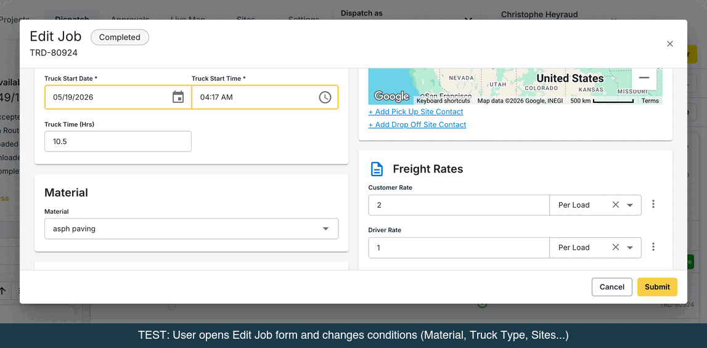
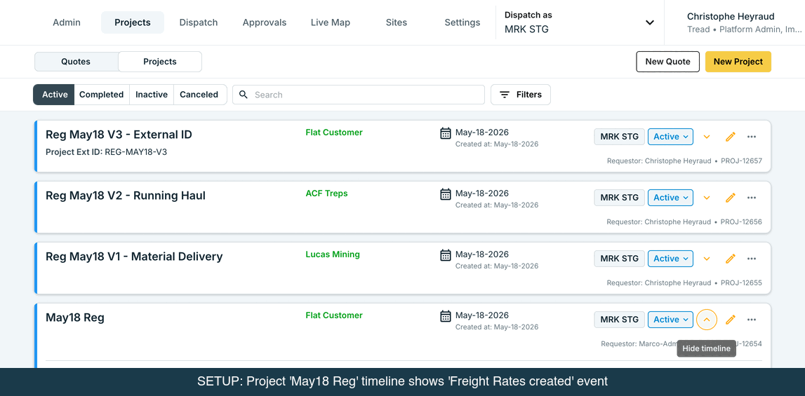
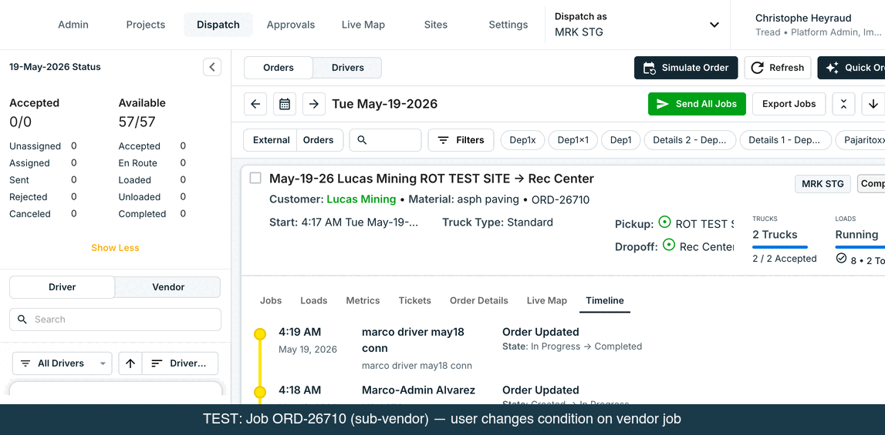
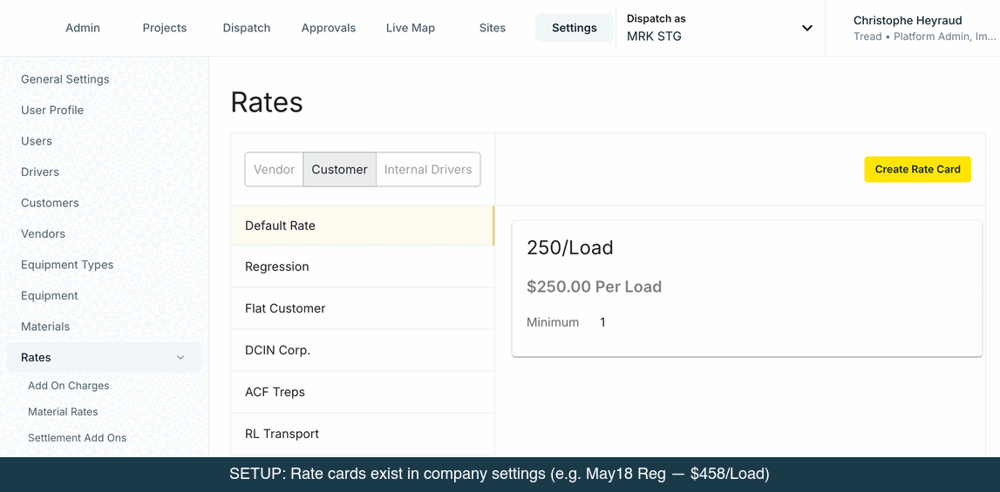

data-ui="page-sales-orders__rate-details__target-rate-type-input" from the legacy RateDetails.tsx component. With PLR flags ON (project_rate_card=ON, site_rates=ON), the Create Order form renders FreightRateDetails.tsx instead, which emits page-sales-orders__freight-rate-details__target-rate-type-input. The element does not exist in the DOM — the test selector never matches. Fix: update OrderFormDrawer.ts:82 to use the freight-rate-details variant.
Error: locator.inputValue timeout 30 s on target-rate-type-input — selector mismatch between old RateDetails and new FreightRateDetails component

→ TRE-14596
→ TRE-14596
→ TRE-14595


→ REP-233
→ REP-234
→ TRE-14590

→ TRE-14590

data-test-id="async-autocomplete": (1) a disabled Company autocomplete pre-filled with "Staging Hauler Co" and (2) the new Fuel Surcharge Schedule autocomplete that appears on Fuel Surcharge selection. Playwright strict mode fails because getByTestId('async-autocomplete') now resolves 2 elements. Root cause: a new disabled Company field was added to the Add On dialog. Fix: use a more specific selector (e.g. targeting the visible/enabled autocomplete) or add a unique data-test-id to the schedule picker.
POST /v1/projects/{id}/auto_add_on_assignments with the existing payload {"data":{"add_on_id":"…","account_type":"customer","quantity":1}} returns 400 Bad Request: "#/components/schemas/AutoAddOnAssignment-Create does not define properties: data". The API schema has changed: the body wrapper data: is no longer valid. A flat payload attempt returns a different 400: "missing required parameters: name, add_on_rate_type, add_on_types" — showing the endpoint now expects create-a-new-add-on fields rather than attach-an-existing-add-on fields. The auto_add_on_assignments schema was likely updated in the API spec since May 21. Fix: update attachProjectAddOn e2e flow to match the new schema.
MuiDataGrid-overlay (the empty-state or loading overlay) is still covering the grid. Fix: add a wait for the DataGrid to exit loading state before clicking the edit button (e.g. wait for overlay to be detached, or wait for at least one row to be visible).
site_rates=ON · project_rate_card=ON153 cases · full launch coverage| ID | Description | Status | Notes |
|---|---|---|---|
| R-P0.1 | Pre-existing Site Rates appear as rates with Pickup Site condition | Pass | |
| R-P0.2 | Same matching behavior preserved post-migration | Pass | |
| R-P0.3 | Singular legacy project flat rate surfaces in new Freight Rates form | Blocked | TRE-14596 · PR #7844 merged — Ready for QA |
| R-P0.4 | Singular legacy order flat rate surfaces on Order form | Blocked | TRE-14596 · PR #7844 merged — Ready for QA |
| ID | Description | Status | Notes |
|---|---|---|---|
| Empty state & basics | |||
| R-P1.1 | Empty state opens with one rate expanded | Pass | |
| R-P1.2 | Save with all rate amounts empty (no validation enforced) | Pass | |
| R-P1.3 | Rate type required when amount entered | Pass | TRE-14052 |
| R-P1.4 | "Flat Commission" + "Commission" removed from Customer Rate types | Pass | |
| R-P1.5 | Default name renders as "Base Rate" when no name + no conditions | Pass | TRE-14597 |
| Rate creation & expansion | |||
| R-P1.6 | Add another rate via dashed footer button | Pass | |
| R-P1.7 | Multiple rates can be expanded simultaneously | Pass | |
| R-P1.8 | "No rates set" placeholder appears when zero rates | Pass | |
| R-P1.9 | Collapsed summary shows pricing + condition chips | Pass | |
| R-P1.10 | Rate list renders in creation order | Pass | |
| R-P1.11 | Copy & Edit project: all rates come through | Pass | |
| Conditions | |||
| R-P1.12 | Add Pickup Site condition | Pass | |
| R-P1.13 | Add Dropoff Site condition | Pass | |
| R-P1.14 | Add Equipment Type condition | Pass | |
| R-P1.15 | Add Material condition | Pass | |
| R-P1.16 | All 4 conditions on one rate | Pass | |
| R-P1.17 | No-conditions rate persists as default fallback | Pass | |
| Driver/Vendor inheritance | |||
| R-P1.18 | "Use vendor rate and add-ons for driver rate" toggle present per card | Pass | |
| R-P1.19 | Default pulls from company default_vendor_rate_to_driver | Pass | |
| R-P1.20 | Toggle ON hides driver row, inherits vendor value + add-ons | Pass | |
| R-P1.21 | Toggle OFF re-exposes driver row | Pass | |
| Add-ons | |||
| R-P1.22 | Fixed $ add-on to customer row | Pass | |
| R-P1.23 | % add-on (display shows correct percent, not decimal) | Pass | MBL-1917 |
| R-P1.24 | Per-quantity add-on | Pass | |
| R-P1.25 | Remove add-on | Pass | |
| R-P1.26 | Cannot add the same add-on type twice on a row | Pass | MBL-1885 revert |
| R-P1.27 | Add-ons remain attached after navigating away + back | Pass | TRE-14645 |
| Rate templates / account cards | |||
| R-P1.28 | Link customer rate template from "…" menu | Pass | |
| R-P1.29 | Account-specific Rate Cards visible in selector | Pass | |
| Duplicate / delete / persistence | |||
| R-P1.30 | Duplicate a rate | Pass | |
| R-P1.31 | Duplicated rate with cleared value/type still saves | Pass | TRE-14646 |
| R-P1.32 | Remove add-on after duplicating rate | Pass | |
| R-P1.33 | Trash icon visible on every rate (including the last one) | Pass | |
| R-P1.34 | Delete a rate | Pass | |
| R-P1.35 | Clear-X on value field sends null, no 422 | Pass | TRE-14651 |
| R-P1.36 | Customer rate doesn't disappear between sessions | Pass | TRE-14612 |
| R-P1.37 | Newly created rates persist after save | Pass | TRE-14412 |
| R-P1.38 | Validation error shows human-readable label, not raw field path | Pass | TRE-14564 |
| R-P1.39 | Partial backend save failure preserves typed input on remaining rates | Pass | TRE-14560 |
| ID | Description | Status | Notes |
|---|---|---|---|
| Display & sync | |||
| R-P2.1 | Freight Rates section renders on Create Order form | Pass | |
| R-P2.2 | "Rates Synced With Project" chip on active order | Pass | |
| R-P2.3 | Edits on order ↔ project sync both directions while active | Pass | |
| R-P2.4 | New rate created at order level is added to project | Pass | |
| R-P2.5 | Final rate is resolved BE-side, not via FE preview | Pass | |
| R-P2.6 | Order without project falls back to company rate cards | Fail | Test selector mismatch: test looks for rate-details__target-rate-type-input (RateDetails.tsx) but PLR flags cause FreightRateDetails.tsx to render, emitting freight-rate-details__target-rate-type-input. Fix: update OrderFormDrawer.ts:82. |
| R-P2.7 | No-op save on Edit Order fires no PATCH; doesn't clobber concurrent SRS edits | Pass | TRE-14509 |
| R-P2.8 | Sort order in UI: least → most conditions, alphabetical tiebreaker | Pass | MBL-1914 |
| R-P2.9 | Update Order on completed order displays rates reliably every open | Pass | TRE-14670 |
| Star / unstar | |||
| R-P2.10 | Star a rate sets default | Pass | |
| R-P2.11 | Confirmation modal appears before star cascades to jobs | Pass | TRE-14485 |
| R-P2.12 | Only one star at a time; starring second replaces first | Pass | |
| R-P2.13 | Unstar shows confirmation banner: "Default rate removed. Jobs will be rematched…" | Pass | TRE-14436 |
| R-P2.14 | Mobile: unstarring actually unstars + triggers rematch | Pass | MBL-1916 |
| Delete-while-starred edge cases | |||
| R-P2.15 | Delete starred rate at Order: same UX as unstar; rematch fires | Pass | TRE-14609 |
| R-P2.16 | Delete starred rate at Project: confirmation modal lists affected orders | Pass | TRE-14611 · TRE-14603 |
| R-P2.17 | Deleting starred SRS issues real DELETE, not just nullify on order | Pass | TRE-14602 |
| Add-on edge cases on Update Order | |||
| R-P2.18 | Change add-on type AND add new of original type in same edit → no 422 | Pass | TRE-14671 |
| ID | Description | Status | Notes |
|---|---|---|---|
| Resolution rules | |||
| R-P3.1 | Most-specific (most conditions) rate wins | Pass | |
| R-P3.2 | Specificity fallback (3 beats 2 beats 1) | Pass | |
| R-P3.3 | Default (no-conditions) catches everything else | Pass | |
| R-P3.4 | No project match → company rate template fallback → primary template | Pass | |
| R-P3.5 | Material missing on job → don't match material-keyed rate | Pass | |
| R-P3.6 | Resolution priority: manual > starred > best-conditions > company template | Pass | |
| Equipment assignment / rematch | |||
| R-P3.7 | Equipment assignment re-evaluates rate | Pass | |
| R-P3.8 | Equipment change re-evaluates rate | Pass | |
| R-P3.9 | Equipment Type rename re-runs matching | Pass | |
| R-P3.10 | Stale add-ons clear on rematch | Pass | |
| R-P3.11 | Equip-type change doesn't duplicate add-ons | Pass | |
| R-P3.12 | Switch Card A (cust+vend+driv) → Card B (cust only): clears stale vendor/driver values | Pass | TRE-14615 · TRE-14652 |
| R-P3.13 | SRS-attached add-ons reach jobs via SetMatchingRateOnAssignment | Pass | |
| R-P3.14 | CascadeProjectAutoAddOnAssignmentJob company-scoped — never targets out-of-company JAs | Pass | TRE-14669 |
| Starred cascades | |||
| R-P3.15 | Star/replace cascades to all eligible jobs | Pass | TRE-14408 |
| R-P3.16 | Unstar reverts jobs to system match | Pass | |
| Edit Job / Rate form | |||
| R-P3.17 | Rate selector is an inline Autocomplete | Pass | |
| R-P3.18 | Selector labeled "Rate Card Selection" | Pass | TRE-14486 · MBL-1912 |
| R-P3.19 | Best-matched rate auto-updates live as user edits | Fail | TRE-14595 open |
| R-P3.20 | Matched card has only customer rate → vendor/driver rows show empty-state inputs | Pass | MBL-1911 |
| R-P3.21 | Manual rate edit on job alone is preserved across saves | Pass | |
| R-P3.22 | Manual add-on edit on job alone is preserved across saves | Pass | |
| R-P3.23 | Manually-edited add-on does not persist across SRS swap | Pass | |
| Conditions + manual edit modal | |||
| R-P3.24 | Conditions changed + rate manually edited in same save → re-match modal appears | Pass | TRE-14619 |
| R-P3.25 | "Save and re-match" proceeds; backend re-matches and discards manual edits | Pass | |
| R-P3.26 | "Cancel" returns to unsaved form | Pass | |
| R-P3.27 | Only conditions change → no modal | Pass | |
| R-P3.28 | Only manual edit → no modal | Pass | |
| R-P3.29 | Modal scope: order-creator company only; sub-vendors do not see it | Pass | |
| Reverts & clears | |||
| R-P3.30 | Revert to another SRS works | Pass | |
| R-P3.31 | Clearing matched rate clears nested vendor/driver/customer values | Pass | |
| R-P3.32 | Explicitly clear job rates (sets to zero/null) | Pass | |
| ID | Description | Status | Notes |
|---|---|---|---|
| Active cascade | |||
| R-P4.1 | Project rate edit cascades to all open eligible orders | Pass | |
| R-P4.2 | Project edit overwrites order rate values for synced orders | Pass | |
| R-P4.3 | Order/Job attribute change re-runs matching | Pass | |
| R-P4.4 | Rate matching runs AFTER potential rate updates (sequence) | Pass | |
| R-P4.5 | Weather-hold and hold orders excluded from cascade | Pass | |
| R-P4.6 | In-progress orders DO cascade | Pass | |
| Order-level add-on cascade | |||
| R-P4.7 | Order-level add-on cascades to jobs | Pass | TRE-14495 |
| R-P4.8 | Order tax changes cascade to invoices + settlements | Pass | TRE-14573/14572 |
| Completion stamping | |||
| R-P4.9 | Completion stamps rate snapshot; chip reads "Rates Frozen At Completion" | Pass | |
| R-P4.10 | Live link to project broken after stamping | Pass | |
| R-P4.11 | Project rate edits do NOT affect completed order | Pass | |
| R-P4.12 | Edits to completed order rates do NOT flow to project | Pass | |
| R-P4.13 | Post-completion order rate-card edits cascade to jobs | Pass | TRE-14418 |
| Completed → In Progress (decoupled state) | |||
| R-P4.14 | Reopen keeps stamped rates, no silent overwrite | Pass | TRE-14620 |
| R-P4.15 | Update Order chip reads "Rates Stamped to Order" when post-completion SRS exists | Pass | TRE-14637 |
| R-P4.16 | Rate edits route to order's SRS, not the project | Pass | |
| R-P4.17 | Order never completed → chip remains "Rates Synced With Project" | Pass | |
| ID | Description | Status | Notes |
|---|---|---|---|
| Dispatch card / mobile order details | |||
| R-P5.1 | Customer Rate on dispatch card only when a rate is starred | Pass | MBL-1845 |
| R-P5.2 | Starred rate's pricing shown on subtitle | Pass | |
| R-P5.3 | Multiple un-starred rates → no Customer Rate fragment | Pass | |
| R-P5.4 | Mobile Pay Rate field styling correct | Pass | MBL-1918 |
| Invoice | |||
| R-P5.5 | Field labeled "Rate Card" on Payables and Receivables | Pass | TRE-14591 |
| R-P5.6 | Invoice shows matched SRS with link/label | Pass | |
| R-P5.7 | Invoice rate selector lists project (or stamped) SRS | Pass | |
| R-P5.8 | Swap rate card on invoice applies to that invoice only | Pass | |
| R-P5.9 | Manually-overridden invoice rate persists | Pass | |
| R-P5.10 | Invoice payload nests site_rate_schedule object (not just id) | Pass | TRE-14401 |
| R-P5.11 | Mixed add-on types sum correctly | Pass | |
| R-P5.12 | Line item amount = JA rate × qty | Pass | |
| R-P5.13 | Add-on added to invoice flows through to settlement total | Pass | TRE-14589 |
| Settlement | |||
| R-P5.14 | Settlement driver line = driver_rate_value × qty + driver-side add-ons | Pass | |
| R-P5.15 | Multi-job settlement aggregates per-job resolved rates | Pass | |
| Project timeline | |||
| R-P5.16 | SRS create event includes name + 4 condition names | Pass | TRE-14483/14491 |
| R-P5.17 | SRS edit shows before/after | Pass | |
| R-P5.18 | SRS-attached add-on add/remove logged | Fail | No ticket yet — add-on changes produce no timeline event |
| R-P5.19 | SRS deletion event | Pass | |
| R-P5.20 | Bulk-create produces N events monotonically | Pass | |
| R-P5.21 | No-op save → no event | Pass | |
| R-P5.23 | Timeline labels read "Freight Rates" not "Site Rate Schedule" | Pass | TRE-14484 |
| R-P5.24 | FE renders SRS name + conditions in timeline | Pass | TRE-14493 |
| Order timeline | |||
| R-P5.25 | Order create with starred SRS logs labels | Pass | |
| R-P5.26 | Default-SRS change event with from/to | Pass | |
| R-P5.27 | Cancelled order — final event "cancelled", no later stamp | Pass | |
| Reports | |||
| R-P5.28 | Project Reports include rate card data | Blocked | REP-233 — reporting product backlog |
| R-P5.29 | Order Reports include rate card data | Blocked | REP-234 — reporting product backlog |
| Job event timeline | |||
| R-P5.30 | Cross-company changes to Pickup/Dropoff/Material/Equipment surfaced | Fail | TRE-14590 open |
| R-P5.31 | New rate card match logged after condition or star/unstar change | Fail | TRE-14590 open |
| ID | Description | Status | Notes |
|---|---|---|---|
| Order-creator vs sub-vendor | |||
| R-P6.1 | Sub-vendor cannot edit customer rate (greyed out) | Pass | TRE-14417 |
| R-P6.2 | Driver cannot edit customer rate | Pass | |
| R-P6.3 | Mobile Edit Job: order-creator → full selector; sub-vendor → customer rate disabled | Pass | MBL-1883 |
| Sub-dispatch flow | |||
| R-P6.4 | Creator dispatches to vendor → vendor JA rate = project card's vendor rate | Pass | TRE-13783 |
| R-P6.5 | Vendor assigns driver → vendor JA rate stays at vendor rate, not customer rate | Pass | |
| R-P6.6 | Creator manually edits vendor's job rate after sub-dispatch → persists | Pass | |
| R-P6.7 | Hot dispatch (no sub-dispatch) — TRE-13783 path does not fire | Pass | |
| Multi-level chain | |||
| R-P6.8 | Creator → Vendor A → Vendor B → Driver: customer rate read-only at each hop | Pass | |
| R-P6.9 | Each vendor's JA rate sources from project rate card's vendor side at their level | Pass | |
| R-P6.10 | Sub-vendor changes job conditions → customer rate/SRS untouched | Pass | |
| R-P6.11 | Sub-vendor does NOT see the TRE-14619 modal | Pass | |
| Permission edges around starring & completion | |||
| R-P6.12 | Sub-vendor cannot star / unstar a rate | Pass | |
| R-P6.13 | On starred order, sub-vendor's JA uses starred rate's vendor side | Pass | |
| R-P6.14 | On completed order, sub-vendor sees stamped vendor rate; customer rate hidden | Pass | |
| R-P6.15 | Sub-vendor add-on on own row → flows to their settlement only | Pass | |
| ID | Description | Status | Notes |
|---|---|---|---|
| R-P7.1 | Copy & Edit Project carries all rates | Pass | TRE-14409 |
| R-P7.2 | Copy & Edit Project carries all add-ons attached to rates | Pass | |
| R-P7.3 | Copy & Edit Order pulls correct project rates | Pass | |
| R-P7.4 | OrderService::Copy preserves default_site_rate_schedule_id (starred rate) | Pass | TRE-14578 |
site_rates=ON · project_rate_card=OFF4 cases · transitional smoke| ID | Description | Status | Notes |
|---|---|---|---|
| S-1 | Project create form opens Manage Site Rates dialog (legacy flow) | Pass | |
| S-2 | Existing TRE-14517/518/519/520 E2E specs pass | Pass | TRE-14517–14520 |
| S-3 | Order form Freight Rates section renders pre-project_rate_card UI | Pass | |
| S-4 | Flag-flip R → S preserves data; user can still view rates (read-only) | Pass |
Methodology
Test run: June 4, 2026 on app.horizon-staging.com (MRK STG). Flags: site_rates=ON · project_rate_card=ON. Tester: Christophe Heyraud. Automated Playwright suite run at 21:37 UTC via chromium (39 specs: 7 passed, 8 failed, 1 flaky, 15 skipped). Manual cases carried forward from May 21 baseline where not covered by automation.
Source: Project-Level Rates — Test Cases Checklist (157 cases). Automated run on June 4 used project-rate-cards/, 12-project-rate-cards-plr.spec.ts, rate-card-simulator-mirror/, 03c, 15-setup-a, 16-setup-b specs. R-P7.3/R-P2.13/R-P5.11-13 automated failures are test-infra (missing "PLR Test Suite" staging fixture), not product regressions.
Mobile (MBL-*) cases were verified on the Tread driver mobile app. Reporting (REP-*) cases are blocked pending reporting-product implementation — no staging equivalent exists yet.
Open items (9): 5 fail (R-P2.6 · R-P3.19 via TRE-14595 · R-P5.18 no ticket · R-P5.30/31 via PRO-1642) · 4 blocked (R-P0.3/4 via TRE-14596 — PR #7844 Ready for QA · R-P5.28/29 via REP-233/234). Automated test-infra issues (not product bugs): AUTO-1 (new Company field in Add On dialog breaks strict-mode selector · fix: use specific test-id for schedule picker), AUTO-2 (auto_add_on_assignments API schema changed · fix: update e2e flow payload), AUTO-3 (DataGrid overlay race condition · fix: wait for rows before clicking). R-P7.3/R-P2.13/R-P5.11-13 require "PLR Test Suite" fixture project in staging. Status since May 21: TRE-14596 advanced to Ready for QA.